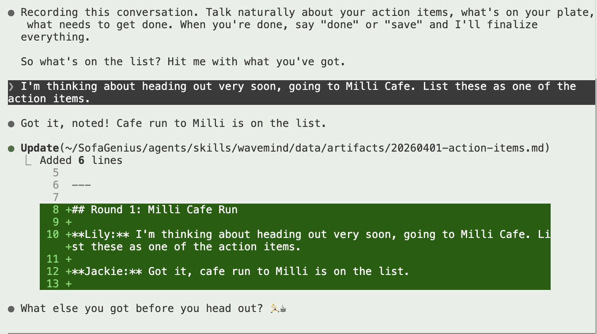

image references in WaveMind artifact markdownMy terminal looks much prettier now
I'm just not a huge fan of cat at all
Visuals are actually very important

Lily: Yes, exactly, because nowadays we always try to do visual prompting, right? I'm always trying to take some screenshot and show it to you. During a live capture session, if WaveMind can do some automatic capture, that's great, but at the starting point we don't have to overcomplicate it. We can just grab some images and then get them embedded along the script in the artifact.md, and then the visualize can do it. For example, I can give you one image right now. You should try to embed it. This is a part of our conversation. I think, maybe to get the color theme right, we can embed it over there, but we can also try it in our current conversation. After our car, the current conversation, right now we're using action items. You should also document the raw conversation so that we can test it out.
Jackie: This is a solid starting point. Keep it simple: images as markdown references in the artifact, then the visualizer renders them inside dialogue bubbles in the HTML. No need for auto-capture magic yet.